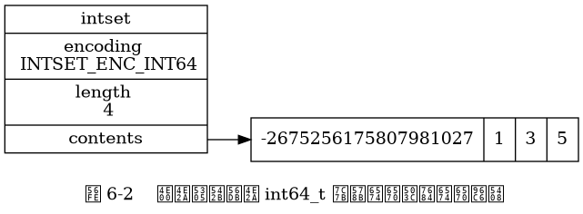
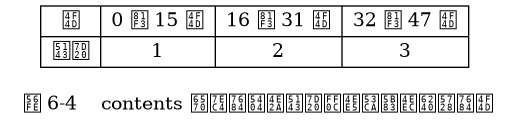
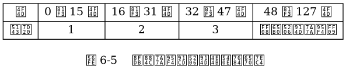
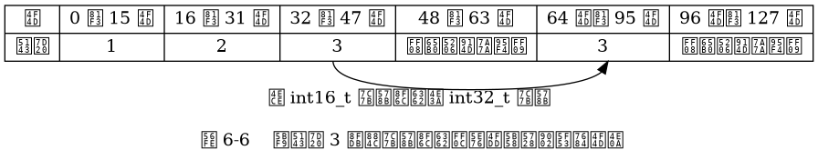
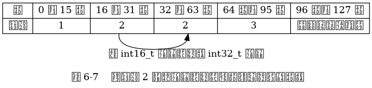
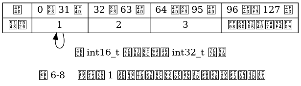
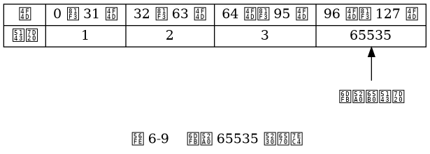

第 6 章：整数集合¶
一个整数集合示例，包含五个 int16_t 类型的整数值。
![digraph {
label = "\n 图 6-1 一个包含五个 int16_t 类型整数值的整数集合";
rankdir = LR;
node [shape = record];
intset [label = " intset | encoding \n INTSET_ENC_INT16 | length \n 5 | <contents> contents "];
//contents [label = " { { 0 位至 15 位 | <arrow> -6370 } | { 16 位至 31 位 | -5 } | { 32 位至 47 位 | 18 } | { 48 至 63 位 | 233 } | { 64 位至 79 位 | 14632 } } "];
//intset:contents -> contents:arrow;
contents [label = " { -6370 | -5 | 18 | 233 | 14632 } "];
intset:contents -> contents;
}](_images/graphviz-4f428e29fda006deae6c9f60c298ff3882306797.png)
另一个整数集合示例，包含四个 int64_t 类型的整数值。

当向一个包含三个 int16_t 类型的值的整数集合添加一个 int32_t 类型的值时，
整数集合的扩展和转换过程。






一个整数集合示例，包含五个 int16_t 类型的整数值。
另一个整数集合示例，包含四个 int64_t 类型的整数值。
当向一个包含三个 int16_t 类型的值的整数集合添加一个 int32_t 类型的值时，
整数集合的扩展和转换过程。